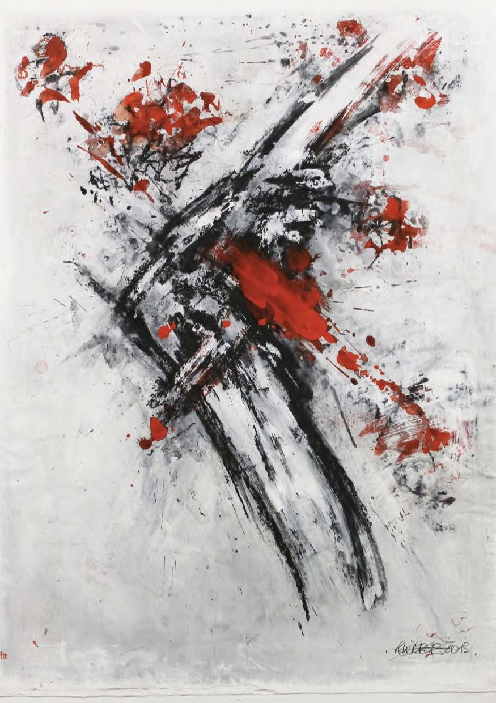

Details
Vernissage: Mittwoch, den 19. März 2025
Einführende Worte: Prof. Dr. Leopold KOGLER (Maler, Grafiker und Kunstpädagoge)
Die Ausstellung war bis Ende Mai 2025 nach Vereinbarung zu besuchen.
Skulptur und Malerei aus der Grafik

Vernissage: Mittwoch, den 19. März 2025
Einführende Worte: Prof. Dr. Leopold KOGLER (Maler, Grafiker und Kunstpädagoge)
Die Ausstellung war bis Ende Mai 2025 nach Vereinbarung zu besuchen.